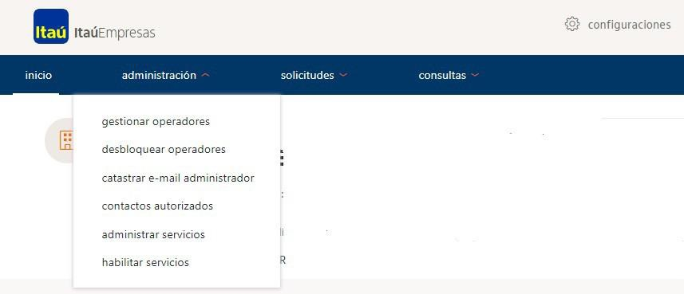
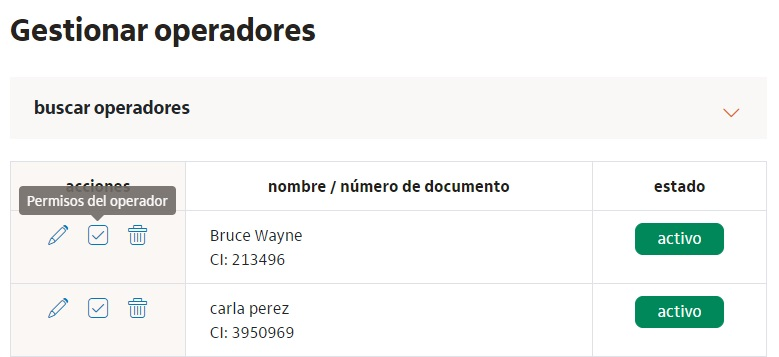
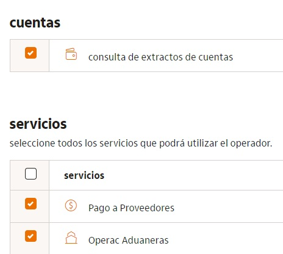
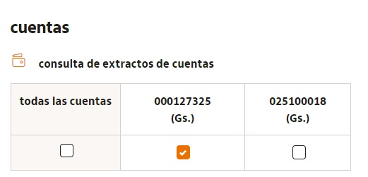
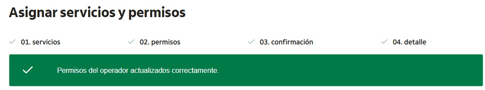
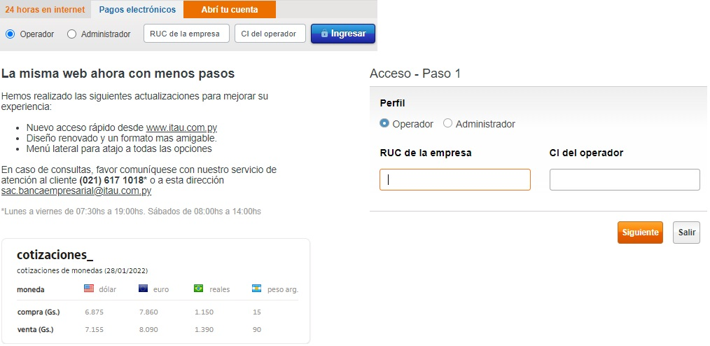
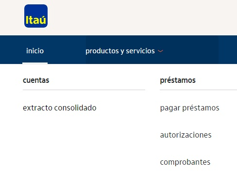
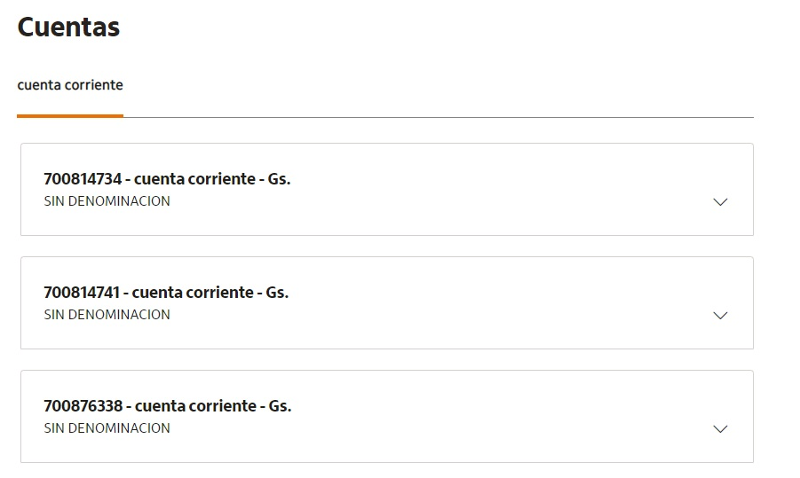

Para acceder a la opción de configurar permisos para extractos se debe ingresar a la plataforma de Pagos Electrónicos con el número de RUC de la empresa con el guion, y la contraseña (pin administrador)
Administrar Servicios
Para otorgar el permiso de visualización de extractos de Cuenta a un operador será necesario ingresar a la plataforma con el usuario administrador e ir a la opcion de Gestionar operadores, ubicado en la sección ‘administración’

Permisos de Visualización de Extractos
Una vez en de la opción se debe seleccionar ‘premisos del operador’ del usuario al que se desea otorgar el permiso.

Permisos de Visualización de Extractos
Se mostrara en pantalla la sección de cuentas y se deberá ingresar a la opción consulta de extractos de cuentas
En la pantalla siguiente se visualizaran las cuenta a ser seleccionadas para que el operador pueda consultar.


Permisos de Visualización de Extractos
Una vez guardados los cambios se confirmará que el usuario ya cuenta con el permis

Sitio Operador - Acceso
Ingresá a la página: https://www.itau.com.py/
Para acceder a la opción de visualización de extractos se debe ingresar a la plataforma de Pagos Electrónicos como operador, con el número de RUC de la empresa con el guion , el nro de documento y la contraseña.

Sitio Operador - Visualización de Extractos
Para que el operador pueda visualizar los extractos de Cuenta debe ingresar a la sección productos y servicios y luego a la opción extracto consolidado.

Sitio Operador - Visualización de Extractos
Selección de cuentas
En la opcion se verán las cuentas de la empresa y el detalle de las mismas.
Estas podrán ser cuenta corriente o caja de ahorro

Sitio Operador - Visualización de Extractos
SResumen de cuentas
Al seleccionar la cuenta se verán los saldos y los últimos movimientos
En caso de querer ver el extracto completo se deberá seleccionar Ver detalle